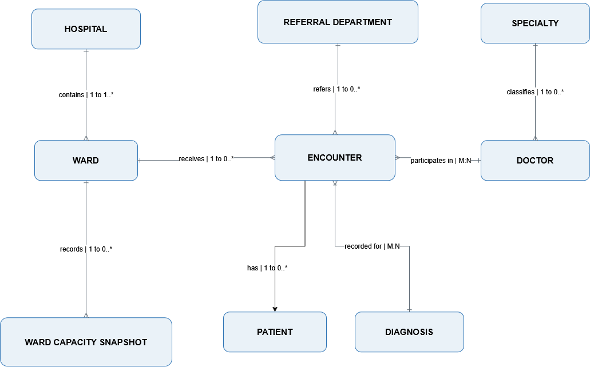
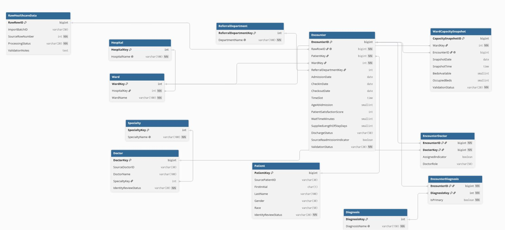

Units 6 and 11
Healthcare readmission database project
My contribution as Database Design Lead, from the initial proposal to the completed team outcome.
Initial proposal
Designing the logical database
The source CSV has 10,000 rows and 26 variables combining patient, encounter, doctor, diagnosis and capacity data. For the Unit 6 team report, I developed the conceptual and logical ERDs and documented the schema.
I centred the design on Encounter, with generated keys where source IDs conflicted. Bridge tables handle doctors and diagnoses; a capacity-snapshot table holds changing bed figures. An unchanged raw layer preserves source-row traceability.
Unit 6 design evidence
Conceptual and logical ERDs
These diagrams are selected from the Unit 6 team report. They show my database-design contribution at the proposal stage; they are not screenshots of the later implemented database. Open either image to inspect it at full size.


Design judgement
From source limitations to defensible decisions
Profiling found no blanks or exact duplicates, yet 2,754 repeated patient IDs had conflicting demographics. Checkout preceded check-in in 47.5% of rows; supplied stay lengths disagreed with dates in 50.58%. We therefore proposed generated internal keys while retaining source IDs, and labelled records VALID, WARNING or QUARANTINED rather than silently correcting them.
Age stayed at encounter level without a reliable birth date; diagnoses related to encounters, not patients. The dashboard remained a proposal in Unit 6, not a completed system.
Final evaluation
Proposal compared with the Unit 11 outcome
The team implemented the proposed raw layer, Encounter-centred SQLite model, quality rules and dashboard, with source-row traceability. The submitted executive summary reports all 76 relational, 25 feature, 22 dashboard-foundation and 40 filter checks passing. This supports technical consistency, not clinical validity.
Of 10,000 rows, 4,750 were quarantined for checkout before check-in, leaving 5,250 in the default dashboard. Among these, 2,211 had a positive supplied readmission indicator (42.11%), compared with 41.42% across all source rows in Unit 6. The denominators differ; neither is a validated clinical rate without a defined window and prior-encounter link. The report also found 1,480 retained capacity snapshots where occupied beds exceeded available beds. A data owner must resolve these issues before operational use. My contribution was the ERDs, normalisation explanation and careful wording; the implemented system was a team outcome.
Academic integrity
AI-use disclosure
Our team used ChatGPT and Gemini to explore schema ideas, profiling code and dashboard design. I checked AI suggestions against the source data, project outputs and course requirements, and revised or rejected them where necessary. We also used ChatGPT to help review and edit this e-Portfolio.